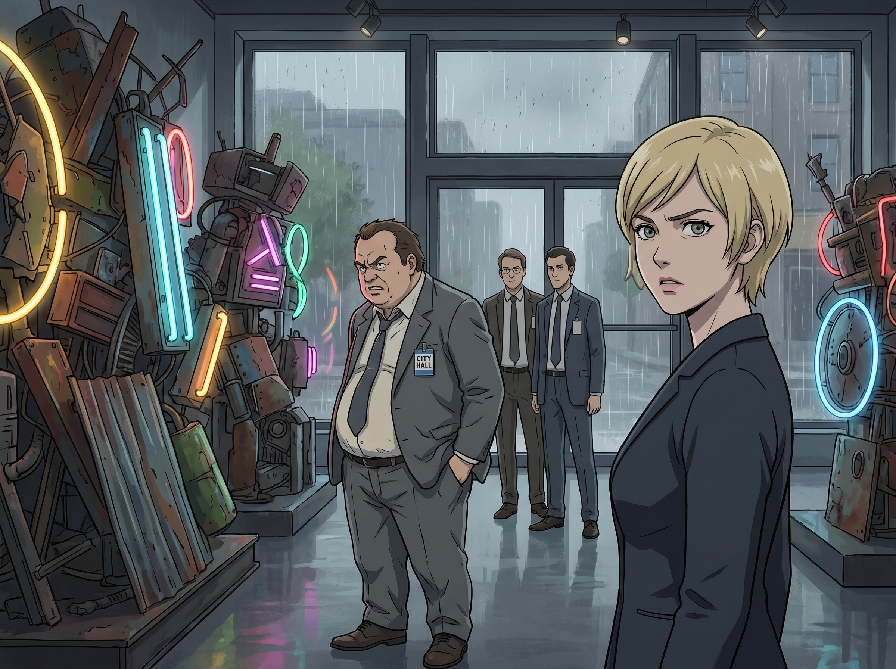

遲到的正義之光（倒敘）

波特蘭的雨季總是伴隨著各種麻煩，但對 Victoria 的畫廊來說，最大的麻煩通常穿著廉價的灰色西裝，胸前掛著市政廳的識別證。
這天下午，波特蘭文化與消防聯合督導處的巡視員 Arthur 帶著兩個助理，大搖大擺地走進了正在佈展的畫廊。他挺著啤酒肚，用挑剔的目光掃視著展廳中央那個由廢棄鋼鐵和霓虹燈管組成的巨大裝置藝術。
「Chase 小姐，」Arthur 裝模作樣地翻開手裡的違規登記本，語氣裡充滿了官僚特有的傲慢與暗示，「這個裝置的電壓負荷和空間佔比，嚴重違反了波特蘭市第 402 條消防安全法規。這不僅是嚴重的安全隱患，更是對市政法規的挑釁。我有權利立刻封停這裡，直到你們繳納兩萬五千美金的整改保證金，並在三十個工作天後重新提交審查申請。」
三十個工作天？冬展下週就要開幕了。
一、束手無策的高度一致
面對這種明目張膽的合規搶錢，二號車廂的四個人第一反應是高度一致的無力感。畢竟官字兩個口，在國家機器的繁文縟節面前，街頭黑魔法和名媛的傲慢通常都會吃癟。
Chloe 氣得想要抄起扳手砸過去，但被 Max 死死拽住衣角。Kate 擔憂地皺起眉頭，而 Victoria 則深吸了一口氣，咬著牙準備屈服。對 Chase 財團來說，兩萬五千美金是小錢，如果因為頂撞審查員而導致展覽延期，損失將是毀滅性的。
就在 Victoria 準備拿出支票本，屈辱地吞下這口氣時，一陣清脆的高跟鞋聲打破了僵局。
二、天使降臨的假意感恩
「長官，您剛才的指導真的太專業、太及時了！」
實習生 Lily 抱著一個厚厚的黑色資料夾走了過來。她臉上洋溢著 Kate Marsh 那種純潔無瑕、充滿感恩的笑容，彷彿 Arthur 不是來敲竹槓的，而是來拯救世界的超級英雄。
Lily 走到 Arthur 面前，深深地鞠了一躬：「如果不是您目光如炬，我們差點就釀成了大禍。為了波特蘭市民的安全，我們絕對支持市政廳的決定。Victoria 學姐，請您立刻打電話通知佈展團隊，展覽無限期取消。」
Arthur 愣住了。Victoria 也愣住了。
「等等，小女孩，」Arthur 皺了皺眉，他只是想要一筆保證金來中飽私囊，並不真的想惹出停展的大新聞，「只要繳納保證金，走個快速通道……」
「不！長官，安全怎麼能走捷徑呢！」Lily 猛地抬起頭，大眼睛裡閃爍著極度狂熱的守法光芒，雙手交握在胸前，「您的嚴謹深深打動了我。為了徹底貫徹您的執法精神，我剛才已經幫畫廊草擬了一份新聞稿，預計十分鐘後發送給《波特蘭時報》和幾家全國性藝術媒體。」
三、FOIA的初次亮相
Lily 溫柔地翻開資料夾，用最甜美的聲音念出了堪比核彈的內容：
「新聞稿標題為：因響應 Arthur 巡視員對第 402 條法規的極致要求，Chase 畫廊冬展遺憾取消。內文會詳細讚頌您是如何不畏強權，嚴格執法。當然，我們也會遺憾地宣佈，原本計畫在開幕式上由市長親自頒發的、捐贈給市消防員工會的五百萬美金慈善基金，將因為展覽取消而無限期擱置。」
Arthur 的臉色瞬間變了。市長的慈善政績？五百萬美金？這要是因為他敲竹槓兩萬五千塊而泡湯了，市長明天就會把他扔進阿卡迪亞灣餵魚。
但 Lily 的攻擊還沒結束，她完美疊加了 Chloe 傳授的物理毀滅體制版。
「除此之外，長官。」Lily 依然保持著天使般的微笑，但語氣裡透出了一絲冰冷的瘋狂，「為了確保我們畫廊未來不會再犯同樣的錯誤，我已經準備好了一百三十份資訊自由法案的申請書。」
她從資料夾裡抽出一疊厚厚的文件，輕輕拍在簽到台上。
「明天一早，我們就會要求調閱過去五年內，您轄區內所有畫廊、博物館和劇院的消防審批記錄。我們想仔細學習一下，其他機構是如何完美避開這條法規的。我相信，州長辦公室的廉政委員會，一定也會對您這種對不同階層採取不同執法標準的獨特辦案藝術，產生極大的興趣。」
四、官僚的潰逃
整個畫廊安靜得連一根針掉在地上都聽得見。
面對一個普通老百姓，官員或許可以隻手遮天。但面對一個會用媒體施壓、會用市長政績做人質、甚至懂得用資訊自由法案制度反向癱瘓官僚系統的極端守法公民，Arthur 的冷汗直接浸濕了灰色的襯衫。
他看著眼前這個笑容甜美、彷彿在為他祈禱的年輕女孩，感覺自己看到了一個將官僚主義玩弄於股掌之間的魔鬼。
「這……這其實……」Arthur 結巴了，他慌亂地翻著手裡的違規登記本，手指都在發抖，「我剛才又仔細看了一下，這個裝置的電壓其實……處於臨界安全值。對於藝術創作，我們市政廳一向是……寬容和支持的。」
「真的嗎？」Lily 微微歪著頭，發出了致命的一問，「您不需要我們繳納保證金了嗎？可千萬別勉強哦，我們真的非常願意接受長官的制裁呢。」
「不！不勉強！完全符合規定！」Arthur 一把合上登記本，甚至來不及多看 Victoria 一眼，帶著兩個助理像逃難一樣，頭也不回地衝出了畫廊大門。
五、震驚的膜拜
畫廊裡再次陷入了死寂。
Lily 深吸了一口氣，把那厚厚的資料夾合上，轉過身，有些害羞地推了推圓框眼鏡。
「Victoria 學姐，」Lily 乖巧地說，「其實那個資料夾裡只有今天中午的披薩外送單，我也沒有寫什麼新聞稿。我只是稍微利用了一下他們對失去權力和引發政治醜聞的恐懼。請問……我這樣做，算是符合畫廊的公關規範嗎？」
遠處，Chloe 手裡的扳手「哐噹」一聲掉在了地上。
Victoria 呆呆地看著自己手裡的支票本，然後看著 Lily，名媛的驕傲在此刻徹底碎裂，取而代之的是一種面對未知神明般的敬畏。
「Caulfield，」Victoria 顫抖著轉過頭，看向同樣石化在原地的 Max，「我收回之前的話。我們創造的不是怪物，我們創造的是下一任波特蘭市長。」
Max 默默地舉起相機，對著 Lily 拍了一張照片。相片緩緩顯影，畫面中，那個穿著實習生制服的女孩，周圍彷彿散發著一種混合了聖光與地獄烈焰的奇異光芒。
Kate 則是輕輕地嘆了口氣，走上前，用顫抖的手遞給 Lily 一塊肉桂捲。
「Lily，吃點甜的吧。」Kate 的語氣充滿了徹底放棄治療的超脫，「吃飽一點，看來以後波特蘭的法律，都要由妳來重新定義了。」
故事的時間點，實際發生在第二季波特蘭工坊時期